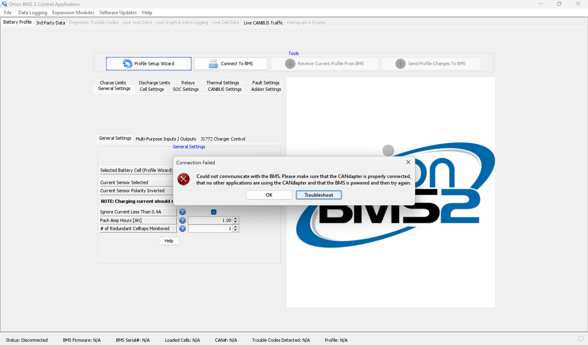

In previous clubs/organizations, I've noticed a lack of proper knowledge transfer. The only way I'm able to gain the information experienced engineers know is by asking them a lot of questions. I don't want others to go through those issues, so this page will be dedicated to all the times the team and I have had to collaborate in order to troubleshoot problems that arise.
Date: 10/29/2026
Recently, we started propulsion integration testing. My teammates and I tried to get the battery management system (BMS) up and running, but the connection failed when we tried connecting to our computer.

Our Current Layout:
Ideas We Tried:
The Solution:
Ultimately, the issue was with our VGA connector (the component that directly hooks up to the CAN adapter). Its Ground wire accidentally got pulled off from the screw terminal connector. To solve this, one of my teammates cut and stripped the Ground wire and I assisted with screwing the wire back into Pin 5 (once we found the proper documentation). If the Power wire ever comes off, it belongs in Pin 3.
Author: Ashley Pock
Created: 11/10/2026 Tues
Last Modified: 11/10/2026 Tues